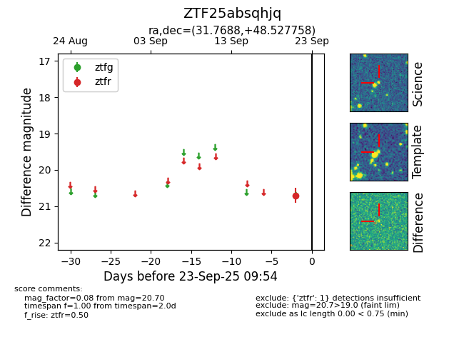

FINK: ZTF25absqhjq
Lasair: ZTF25absqhjq
ALeRCE: ZTF25absqhjq
ZTF25absqhjq (ztf,fink)
equatorial (ra, dec) = (31.7688,+48.52776)
galactic (l, b) = (135.6294,-12.47036)

last ztfr=20.70
1 ztfr detections